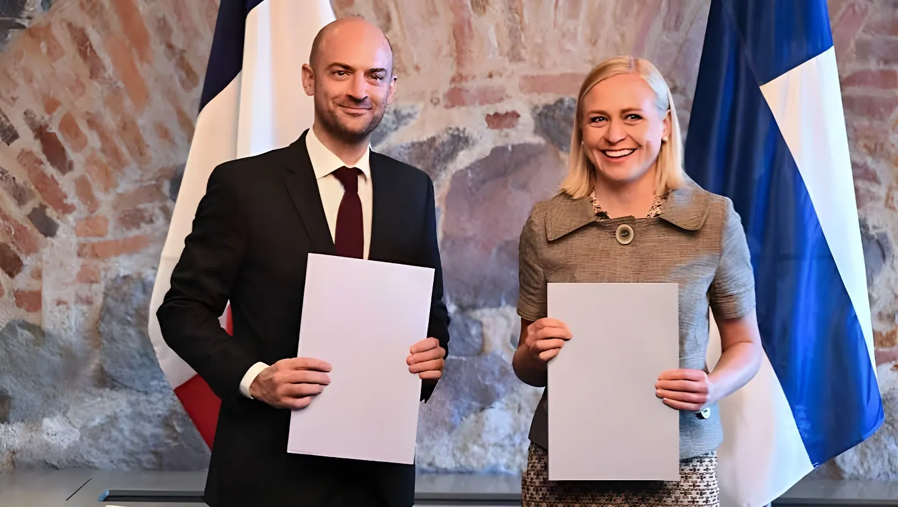

Réunis à l'Élysée le 10 septembre 2026, Emmanuel Macron et le président finlandais Alexander Stubb ont ouvert la voie à un accord formalisé quatre jours plus tard par les ministères des Affaires étrangères des deux pays : Helsinki devient le dixième État européen à s'associer à la « dissuasion avancée » proposée par Paris. Une adhésion motivée par l'inquiétude croissante face à la Russie, qui interroge une nouvelle fois la solidité de la garantie nucléaire américaine sur le continent.
C'est à l'occasion d'une rencontre à l'Élysée, le 10 septembre 2026, entre Emmanuel Macron et le président finlandais Alexander Stubb, que le principe de l'adhésion d'Helsinki a été arrêté. L'accord a ensuite été formalisé le lundi 14 septembre par une déclaration commune des ministères des Affaires étrangères des deux pays, publiée simultanément à Paris et à Helsinki. La Finlande devient ainsi le dixième pays européen, après le Royaume-Uni, l'Allemagne, la Pologne, les Pays-Bas, la Belgique, la Grèce, la Suède, le Danemark et la Norvège, à s'associer à l'initiative française de « dissuasion avancée ».
Un groupe de pilotage nucléaire commun doit être mis en place dans les prochains mois afin de définir concrètement les modalités de cette coopération bilatérale, selon l'annonce conjointe des deux capitales. Sur les réseaux sociaux, le président Alexander Stubb a présenté cette initiative comme visant avant tout à renforcer la sécurité européenne, tout en précisant que le dispositif avait fait l'objet de discussions approfondies avec les États-Unis et l'OTAN, dont la mission nucléaire n'est pas remise en cause.
Le dispositif proposé par la France se distingue nettement du partage nucléaire pratiqué par l'OTAN, où plusieurs États membres siègent au sein d'un Groupe des plans nucléaires consultatif. Dans le cadre de la dissuasion avancée, le président de la République française conserve seul l'autorité de décider de l'emploi de l'arme nucléaire. La coopération avec les partenaires se limite à des consultations stratégiques renforcées, à des exercices conjoints et à la possibilité de déploiements temporaires de moyens français à capacité nucléaire sur le territoire des pays associés, en fonction des accords d'accès négociés avec chacun.
Helsinki a toutefois pris soin de préciser qu'elle n'envisageait pas d'accueillir des armes nucléaires sur son sol en temps de paix, une réserve comparable à celles déjà exprimées par la Suède et la Norvège lors de leur propre adhésion. La Finlande continuera par ailleurs de s'appuyer en priorité sur la protection nucléaire de l'OTAN, qu'elle a rejointe en 2023, l'initiative française venant s'y ajouter sans s'y substituer.
Depuis la base opérationnelle de l'Île Longue, Emmanuel Macron dévoile le concept de « dissuasion avancée » et annonce le ralliement immédiat de huit pays européens.
La Suède et la France réunissent à Paris un premier groupe de pilotage nucléaire chargé de structurer la gouvernance du dispositif.
La Norvège signe à l'Élysée l'« arrangement de Narvik » et devient le neuvième pays à rejoindre la dissuasion avancée française.
Emmanuel Macron reçoit le président finlandais Alexander Stubb à l'Élysée pour une rencontre bilatérale déterminante.
Paris et Helsinki officialisent, par déclaration commune, l'adhésion de la Finlande, dixième pays partenaire de l'initiative.
L'adhésion finlandaise s'inscrit dans un contexte de vigilance accrue vis-à-vis de la Russie, avec laquelle le pays partage une frontière longue de près de 1 300 kilomètres, la plus longue de tous les États membres de l'Union européenne. En décembre 2025, les autorités finlandaises avaient déjà saisi un navire, le Fitburg, en provenance de Saint-Pétersbourg, soupçonné d'avoir volontairement endommagé des câbles de télécommunications sous-marins dans le golfe de Finlande, un incident interprété comme une possible manœuvre de sabotage russe.
Le 17 juin 2026, le Parlement finlandais avait déjà voté un assouplissement des restrictions historiques du pays sur l'importation et le transport d'armes nucléaires, afin de faciliter leur transit entre alliés de l'OTAN. Cet été, la France avait par ailleurs annoncé l'envoi de troupes pour renforcer les forces avancées de l'OTAN stationnées en Finlande, une coopération de défense bilatérale déjà en plein essor avant même l'annonce du 14 septembre.
Depuis le discours fondateur de mars, la dissuasion avancée s'est élargie par étapes successives et selon des arrangements adaptés à chaque partenaire : la Suède a organisé dès avril un groupe de pilotage nucléaire avec la France tout en excluant tout stationnement d'armes étrangères, tandis que la Norvège, pourtant fidèle alliée des États-Unis et non-membre de l'Union européenne, a signé fin mai l'arrangement de Narvik. L'arrivée de la Finlande prolonge cette dynamique vers le flanc nord-est du continent, directement exposé face à la Russie.
La capacité française reposant sur cette dissuasion s'appuie sur la Force océanique stratégique, avec ses quatre sous-marins nucléaires lanceurs d'engins de la classe Le Triomphant, ainsi que sur une composante aéroportée armée de Rafale. La loi de programmation militaire actualisée prévoit 1,6 milliard d'euros supplémentaires entre 2026 et 2030 pour accompagner cette montée en puissance, avant l'arrivée à partir de 2037 de nouveaux sous-marins de la classe L'Invincible.
« Si la coopération peut être plus profonde dans le domaine nucléaire, cela ira probablement dans ce sens. »
— Kristen Michal, Premier ministre estonien, 14 septembre 2026En dix pays ralliés en six mois, la dissuasion avancée dessine une géographie nucléaire européenne inédite depuis la fin de la Guerre froide. Mais son architecture reste volontairement limitée : la France ne partage ni la décision d'emploi de l'arme, ni son arsenal, et n'offre aucune garantie comparable à l'article 5 de l'OTAN. Chaque État conserve la main sur le rythme et l'étendue de son engagement, sans obligation de financer l'effort français.
Le succès de cette initiative tient moins à sa portée opérationnelle immédiate, encore à préciser pays par pays, qu'à son rôle de signal politique envoyé à Moscou comme à Washington, alors que les Européens réévaluent leurs dépendances sécuritaires face aux incertitudes entourant l'engagement américain sur le continent. Reste à savoir si l'adhésion, désormais probable, de l'Estonie ouvrira la voie à une extension vers les pays baltes, en première ligne face à la Russie.